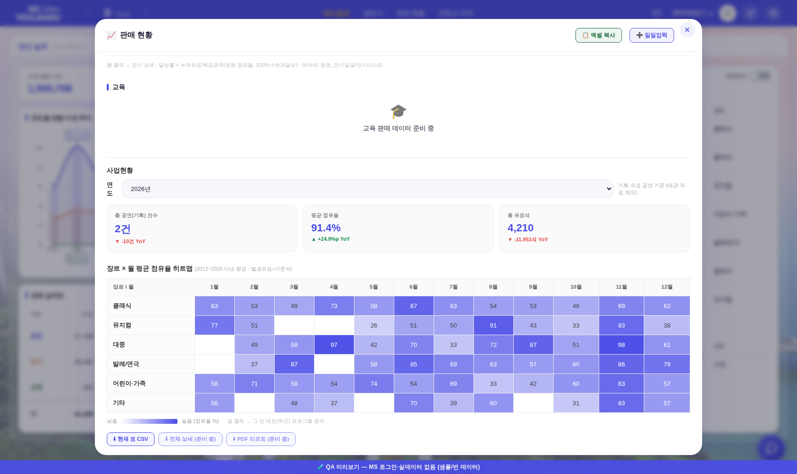
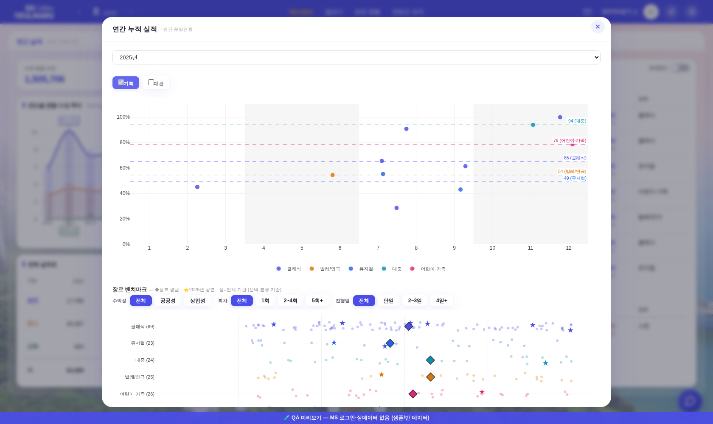
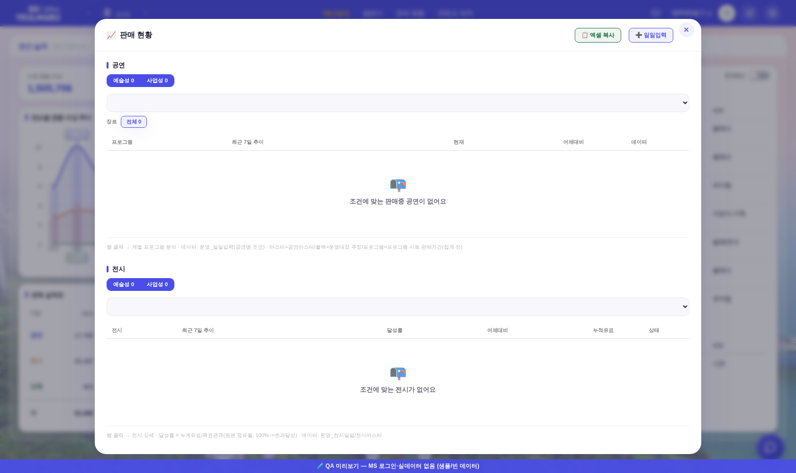
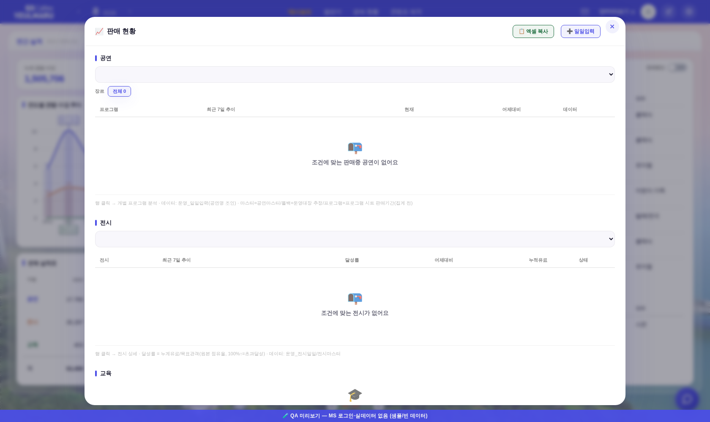

예술성/사업성(수익성) 축 전면 폐지 — 전후 비교
260803 운영자 지시 「예술성·사업성 관련 부분 일괄 제거 + DB까지 수정」 · 결정 = 1-b(전시 무료 구분은 「무료여부」 열 신설·이관) · 2-b(백업 후 열·시트 완전 삭제).
캡처 = 헤드리스 1680×1000 · QA 목데이터(?qa=admin · 실API/실데이터 무접촉 · smoke_layout 하네스 계승) · 전 = main(a2f6674) / 후 = 본 PR.
무엇이 없어졌나 (화면 10곳 · 함수 8종)
① 판매현황 컴팩트 표 「사업 성격」 열 + 성격 pill 클릭 필터 + 헤더 활성 칩 ② 진행중 프로그램 표의 성격 필터 축(셀은 260731 선제 삭제) ③ 카드·드릴 메타의 「예술성/사업성」 표기 ④ admin 연필 즉석 토글(공연마스터 직접 수정) ⑤ 실적 조회 공연·전시 [예술성 N|사업성 N] 세그 ⑥ 또래 비교의 「같은 성격」 축(→ 같은 장르) ⑦ 판매 실적 KPI 상업성·공공성 카드, [3] 페이스 밴드 성격 표본, [4] 수익성별 버블 패널, 목표 진척 좌우 분할 ⑧ 사업 결과 비교 수익성 칩 ⑨ 사업현황 「예술성 : 사업성」 카드·콘텐츠구분×수익성 매트릭스·CSV 수익성 열 ⑩ 프로그램 관리 「성격」 열·「사업 성격」 select·수익성 부가열 송신.
전시 「무료」 구분(판매현황 제외 판정)만 무료여부 열 기반으로 존치.
1. 사업현황 섹션 — KPI 4→3장 · 매트릭스 소거
전 — 「예술성 : 사업성」 카드 + 콘텐츠구분×수익성 매트릭스
후 — 카드 3장 · 매트릭스 없음(히트맵·CSV는 그대로)
2. 사업 결과 비교 — 장르 벤치마크 필터 줄
전 — 수익성 [전체|공공성|상업성] 칩 있음
3. 실적 조회(판매 현황) — 공연·전시 성격 세그
전 — [예술성 N|사업성 N] 세그(공연·전시 각각)
후 — 연도 select만(장르 칩·표 불변)
4. 메인 1면(대시보드) — 시각 변화 0 (회귀 0 증빙)
전/후 스크린샷 md5 동일(721e1018…) — 진행중 프로그램 표의 성격 셀은 260731에 이미 삭제돼 메인은 픽셀 단위 무변화.
DB 정리(별도 실행 — 운영자 로컬)
| 순서 | 무엇 | 명령 |
|---|
| ① | 백업 + 전시마스터 무료여부 신설·이관 (라이브 무영향) | DB_PW=<슈퍼비번> node docs/260803_profit_axis_db_migrate.mjs --phase=a --write |
| ② | 본 PR 머지 → Pages·Worker 자동 배포(1~2분) 확인 | — |
| ③ | 수익성 열 3곳(공연마스터·전시마스터·프로그램) 물리 삭제 + 운영_수익성 시트 삭제 | DB_PW=<슈퍼비번> node docs/260803_profit_axis_db_migrate.mjs --phase=b --write |
스크립트는 매 실행 4곳을 _backup_profit_260803/에 JSON+CSV 백업(.gitignore) · DRY-RUN 기본(--write 없이는 무접촉) · Phase B는 라이브에 구 코드가 남아 있으면 스스로 중단.